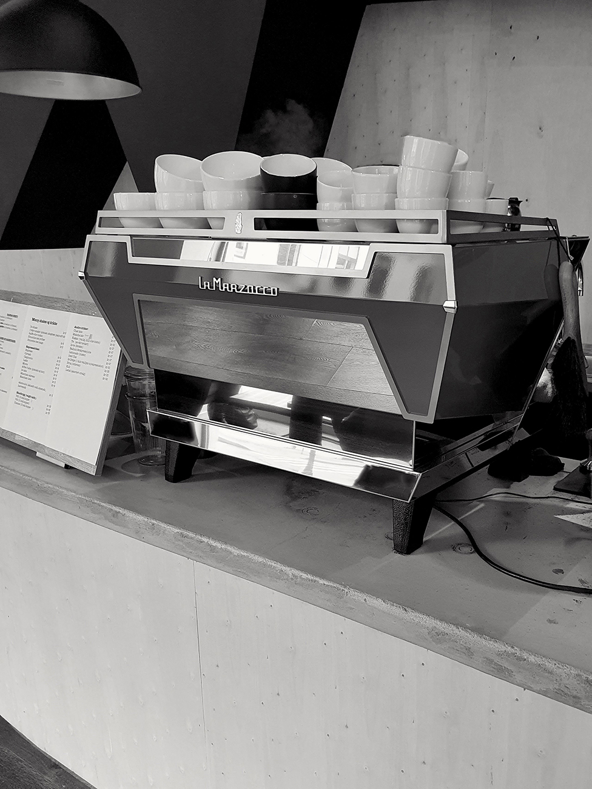
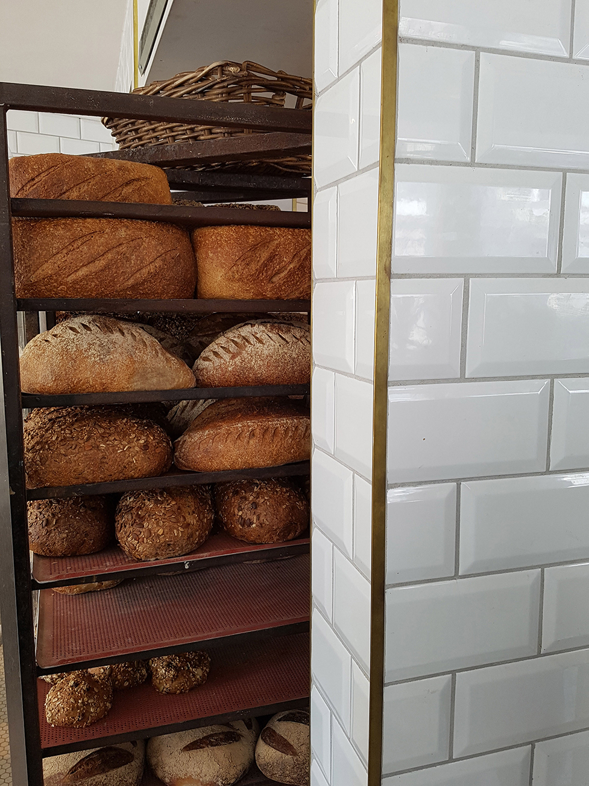

Kaféguidens intensjon er å guide deg gjennom mylderet av kaféer, kaffebarer og bakerier i Oslo. I hovedstaden finnes det hundrevis av forskjellige kaféer å velge mellom. Om vi innlemmer restauranter hvor det også serveres kaffe og kaker, så er vi antageligvis oppe i tusenvis av steder. Vi ønsker å gjøre det enklere for deg som leser å velge blant alle disse, og gi deg en komplett oversikt over våre favoritter.
Om
- Vår historie og intensjon -
Kaféguiden oppsto i pandemiens andre år, 2021, da lengselen etter å kunne gå på kafé igjen ble for stor. Vårt mål er at vi skal hjelpe deg med å finne nye steder å besøke - og at vi selv skal oppdage nye steder i vår jakt på de beste kaféene i Oslo! På sikt ønsker vi også å innlemme andre norske byer og populære storbyer i Europa. Vår interesse av å drikke god kaffe og besøke koselige kaféer er om så enda større når vi er ute og reiser, og vi gleder oss til dette neste steget når tiden er inne for det.


God kaffe er hjertet av en kafé - men en god kafé er så mye mer enn bare kaffen de serverer! For oss er atmosfæren, menyutvalg, interiør og service vel så viktig kriterier. Prisnivå er også en relevant faktor for mange, men siden det å gå på kafé generelt kan være ganske dyrt, så har vi valgt å ikke legge så mye vekt på dette. Etter mange kafébesøk har vi lært at du stort sett alltid må regne med å måtte ut med ca. en hundrelapp for kaffe og noe attåt - men det syns vi også kan være vel verdt det om du besøker det rette stedet.
Man betaler jo ikke bare for selve serveringen, men også for opplevelsen. Et sted å arbeide i fred, et sted å samle nye krefter, et møtested hvor du kan treffe venner og bekjente osv. Det er mange gode grunner for å gå på kafé - og i disse tider er den viktigste kanskje bare følelsen av å kunne gå ut av huset og oppleve noen nytt!
I følge Kaffeundersøkelsen 2017, en undersøkelse som blir utarbeidet årlig av Norsk Kaffeinformasjon, drikker nordmenn kaffe latte og andre typer espressobaserte kaffedrikker primært på kafé/kaffebar. Selv med inntoget av mer avanserte kaffe- og kapselmaskiner til hjemmebruk, så ser vi at flere fremdeles foretrekker å kjøpe slik kaffe ute. Spesielt er dette en tydelig trend i de store byene, naturligvis fordi der er også utvalget av ulike kaféer størst. Med denne informasjonen i bakhånd, så føler vi virkelig at det finnes et behov for en ordentlig kaféguide i Oslo!